Master Thesis (Data Science Project)
This project contains procedures regarding my master thesis: “Design and implementation of a machine learning model for the prediction of production times, as an optimization tool for proposal management tasks for die forged products.”. This has been my most comprenhensive Data Science Project until now. Due to a nondisclosure agreement, I am not able to share any data or code regarding the project. For this reason I am only going to provide information about the procedure used in the project.
Introduction
Already in the development phase of new high-quality components, engineers are faced with the question of the relationship between function and manufacturing costs. Often, the intended use case and the resulting geometric design of a component determine which manufacturing process might make sense from a production and commercial point of view. The decision-making processes can take a long time, which unnecessarily prolongs the development time of products. One of the main aims in the product development department is to provide customers’ development engineers with the most accurate possible cost, requirement, and quality-related advantages of the closed-die forging process to help facilitate quick decision-making. A high degree of technical and experiential knowledge is required to meet this standard, which is already applied during the pre-calculation phase through the development of technically sophisticated workflow sequences. It quickly becomes clear what an immense effort hides behind the processing of a customer product request. Information from the most diverse production areas must be collected repeatedly and evaluated and classified concerning its relevance for the best possible manufacturing process.
This work tries to tackle, employing Supervised Machine Learning, the proposal management process in product development. It should be possible to noticeably accelerate the processing time of the pre-calculation process with machine learning methods and at the same time maintain a high quality of the proposal management results. This use case aims to reduce the dependency on Empirical Research for assignment of production times, particularly for the forging process of closed die forged parts, eliminating the need for FEM Simulations to back up first-time proposals.
Closed die forging belongs according to the German Institute for Standardisation DIN to the pressing forming processes besides indentation, rolling and open die forging. For the forging process, forging dies with the negative geometries are used. A preheated ingot is put between the dies, force is applied (e.g. forging hammer), the material starts to flow inside the die until the end geometry is filled.
| Hydraulic Counterblow Hammer | Closed die forging process |
|---|---|
 |
 |
Due to the way materials and especially steel aloys behave in the plasticity state (this is the state in which material deforms and can not return to its initial state) it is not possible using a generalized formula to calculate the required time for the forging process. The plastic deformation behavior from materials cannot be linearly explained. Depending on temperature, chemical composition of the material at varying strain rates, the amount of force needed to achieve the desired true strain varies. Below is a Comparison of flow curves for a C15 steel, with different temperatures and strain rates.

Until now, the prediction of the materials’ behaviour on the parts’ geometry can only be achieved using FEM (Finite element method) simulations. The idea of this project is to find a faster way of achieving a prediction of the forging time for which the deformation force plays an important role.
Data availability
Data availability has become nowadays a topic of high relevance for most companies. Technologies like Data Mining are used to find interesting patterns in data that might well already been there, stored and archived or being generated on a daily basis. The learning dataset is composed of data coming from different sources. All parameters were collected for 313 different products, for which all 19 features were available. The resulting dataset is a mixture of continous and categorical variables. This dataset was used as the master dataset. Later on records from the feedback system were joined with the master dataset.

Exploratory Data Analysis (EDA)
Data analysis is a crucial step in any Machine Learning problem, is a way to introduce and understand data before moving further to the modeling process. Data analysis provides the analyst with important information about data types, relation between variables in a dataset, their shape, form, distribution as well as descriptive statistics. In data analysis patterns in the data can be discovered by means of numerical tests and visualization techniques. This is in fact one of the most time-consuming steps on any project, since it requires data to be consolidated and prepared for the analysis.
| Correlation Matrix | Data distribution |
|---|---|
 |
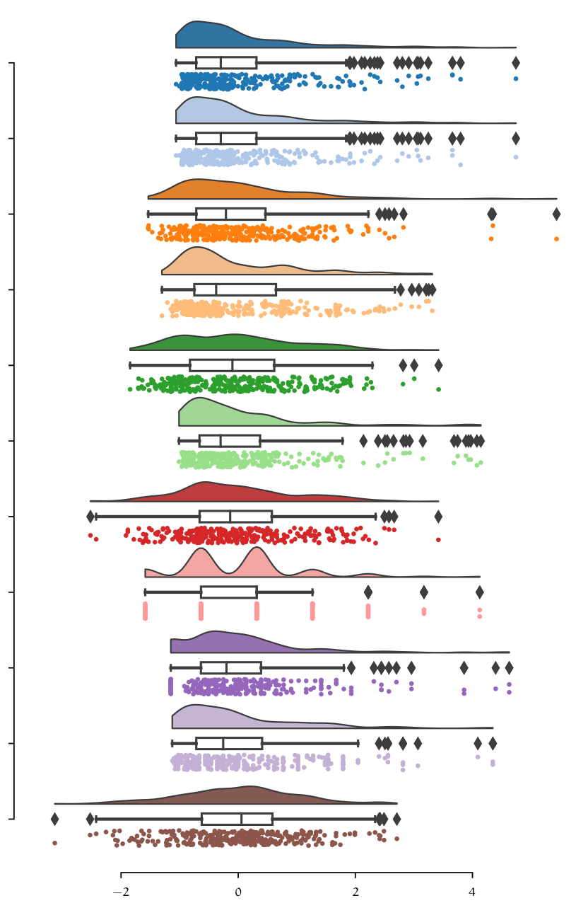 |
| Analysis of residuals | |
 |
Model evaluation
There are numerous regression algorithms already implemented in libraries like scikit-learn that one can choose from. I chose a simple linear regression models as my baseline model, since it is fast to train due to its vectorized closed form implementation, and easy to interpret. At this point in time categorical variables were removed from the dataset, leaving only continous numerical variables. This was first investigated to see, if only by using numerical variables a good model could be created. The Inclusion of categorical variables requires further preprocessing (encoding) of those variables to a continous space. After getting first results and model accuracy, a set of different models were tested on the same dataset to create a benchmark.
| Model | MAE | MSE | RMSE | R2 | RMSLE | MAPE | TT (Sec) |
|---|---|---|---|---|---|---|---|
| CatBoost Regressor | 4.2354 | 50.8014 | 6.9793 | 0.8645 | 0.2672 | 0.2042 | 1.618 |
| Extra Trees Regressor | 4.3761 | 56.3788 | 7.2692 | 0.8534 | 0.2778 | 0.2097 | 0.029 |
| Random Forest Regressor | 4.4652 | 58.7568 | 7.4328 | 0.8481 | 0.2661 | 0.2050 | 0.038 |
| Gradient Boosting Regressor | 4.5829 | 60.1312 | 7.5515 | 0.8387 | 0.2703 | 0.2183 | 0.014 |
| Light Gradient Boosting Machine | 4.5967 | 66.1371 | 7.8272 | 0.8363 | 0.2817 | 0.2099 | 0.008 |
| Extreme Gradient Boosting | 4.5624 | 67.4343 | 7.9526 | 0.8192 | 0.2789 | 0.2110 | 12.492 |
| AdaBoost Regressor | 6.6773 | 81.7521 | 8.9387 | 0.7735 | 0.3999 | 0.4283 | 0.012 |
| Decision Tree Regressor | 5.2150 | 87.8739 | 9.1760 | 0.7619 | 0.3138 | 0.2339 | 0.004 |
| K Neighbors Regressor | 5.3629 | 88.5753 | 9.2931 | 0.7544 | 0.3071 | 0.2343 | 0.005 |
| Ridge Regression | 6.6509 | 95.4289 | 9.5335 | 0.7442 | 0.3869 | 0.3239 | 0.004 |
| Least Angle Regression | 6.6597 | 95.6338 | 9.5440 | 0.7433 | 0.3877 | 0.3246 | 0.005 |
| Linear Regression | 6.6597 | 95.6337 | 9.5440 | 0.7433 | 0.3877 | 0.3246 | 0.004 |
| Elastic Net | 6.9408 | 98.6090 | 9.7182 | 0.7374 | 0.3786 | 0.3313 | 0.004 |
| Lasso Regression | 6.9496 | 98.9866 | 9.7357 | 0.7366 | 0.3792 | 0.3319 | 0.004 |
| Huber Regressor | 6.5085 | 100.9395 | 9.7533 | 0.7321 | 0.3367 | 0.3023 | 0.006 |
| Bayesian Ridge | 7.0413 | 100.8291 | 9.8349 | 0.7312 | 0.3786 | 0.3334 | 0.004 |
| Orthogonal Matching Pursuit | 8.0436 | 146.5258 | 11.7492 | 0.6310 | 0.3851 | 0.3827 | 0.004 |
| Passive Aggressive Regressor | 9.8682 | 207.8557 | 13.9189 | 0.4282 | 0.5120 | 0.3922 | 0.004 |
| Lasso Least Angle Regression | 15.6397 | 406.6446 | 19.7724 | -0.0291 | 0.7431 | 1.0209 | 0.004 |
As we can see, benchmarking different models with their standard configurations gives us a pretty good start in terms of accuracy. Accuracy was measured using the RMSE (Root Mean Squared Error) metric. These models have still the potential to be optimized. Model optimization goes beyond numerical optimization e.g. Grid Search or Random Search. Performance of a model can also be improved by carefully performing feature engineering and ensenmbling or stacking models together. In the table above is possible to see, that relatively simple algorithms like Random Forest perform better than more complex and modern approaches like LGBM (Light Gradient Boosting Machine). In fact, the difference in performance between the Random forest Regressor and the CatBoost Regressor is marginal in terms of the RMSE (measured in minutes) one small difference is the training time required for CatBoost is significantly higher, which for the final size of the dataset does not make a lot of difference but if scaled could potentially present an issue.
Hyperparameter Optimization
Since Random Forest is supported natively by scikit-learn we can make use of the GridSearchCV and RandomSearhCV classes to perform Hyperparameter Optimization. The following table show the optimization proocess for the Random Forest Regressor estimator.
| Hyperparameter | Value range | GSearch | RSearch |
|---|---|---|---|
| Max. depth | \(\{None, [2,10] \in \mathbb{Z}\}\) | 8 | None |
| Max. features | \(\{auto, sqrt, log2\}\) | sqrt | log2 |
| Max. leaf nodes | \(\{None, [2,10] \in \mathbb{Z}\}\) | None | None |
| Criterion | \(\{mse, friedeman mse, mae, poisson\}\) | friedman mse | mae |
| ccp alpha | \([0, 0.9] \in \mathbb{R}\) | 0.1 | 0 |
First a hyperparameter space was defined. This set of parameter combinations are used by either constructing the cartesian product of all combinations in case of Grid Search. Which is a Brute force approach to optimization where all possible combinations are evaluated. Or using Random Search, which randomly (in this case) samples from the hyperparameter space. The results with a 10-fold cross validation are summarized below.
| Metric | Resources | GSearch | RSearch |
|---|---|---|---|
| \(R^{2}\) with \(CV = 10\) | Performed on a machine with 12 CPU cores at 4.3 Ghz and 16 Gb of RAM | 0.8737 | 0.8723 |
| \(RMSE\) with \(CV = 10\) | 6.510 | 6.541 | |
| Number of fits with \(CV = 10\) | 48600 | 2500 | |
| Compute time (seconds) | 768 | 40.3 |
Taking a look at the results after cross validation is possible to see that, the optimization using either Grid Search or Random Search improved the performance of the model by almost over a minute in reduction in the RMSE (See baseline/unoptimized model in table below). Grid Search uses more ressources since it has to fit a larger number of combinations. Random search from the other side requires a fraction of the number of repetitions needed by Grid Search, thus achieving a similar result. At this point there is not much that one could do to the model in terms of hyperparameter optimization. The next step was to see if modifying the feature space could result in an increase of performance.
| Baseline model | \(\mathbf{RMSE}\) | \(\mathbf{R^2}\) | \(\mathbf{MAE}\) |
|---|---|---|---|
| Random Forest regressor | 7.4328 | 0.8481 | 4.4652 |
Dimensionality reduction
For the dataset multiple dimensionality reduction (PCA, LASSO) and feature selection techniques (Model based feature selection, Recursive feature elimination), were used on the dataset in order to achieve lower dimensionality as well as better performance. At this point the complete dataset was used, by converting categorical variables to numeric, using OneHot encoding. The dimension of the dataset changed from 19 to 70 variables.
Model based feature selection
Starting with Model based feature selection a supervised algorithm, in this case a random forest regressor was used to learn the feature importance of the model. This method uses a supervised algorithm e.g. a decision tree or random forest as well as linear models, to learn the feature importance of the data in the model before fitting the final estimator. Performing model-based feature selection on the encoded dataset results in a reduction from 70 features to 35. The criteria implemented in scikit-learn library for choosing which variables to keep is based on the Mean decrease in impurity (MDI) metric, which can use any defined impurity measure \(t(i)\) , e.g. mean squared error for regression or Gini coefficient for classification.
Recursive Feature Elimination (RFE)
Another approach for selecting features is by recursively fitting a model with a smaller subset of features on each iteration. This method uses an estimator e.g. Random Forest regressor and ranks features on each iteration based on some importance metric, for example, the mean decrease impurity used for model-based selection. On each iteration, the least important features are removed until a predefined threshold is achieved.
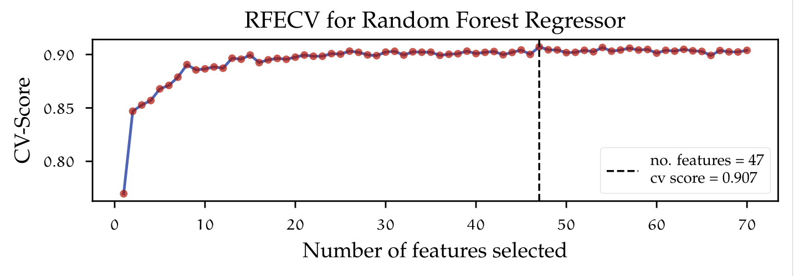
The figure above shows the implementation of Recursive Feature Elimination with Cross Validation (RFECV). The learning curve indicates how the number of predictors in- creases or decreases the performance of the used estimator by inducing variance (adding more predictors), which leads to a decrease in bias. The dotted vertical line marks the point on the graph at which the highest cross-validated train score was achieved, given a certain number of features. In this case, keeping 47 out of 70 variables lead to the most accurate model. One major drawback from using recursive feature elimination and also model-based feature selection is the fact that only a subset of some categorical variables was chosen to be relevant. This is due to the way variables are encoded. Dummy variables are treated as single features and therefore the algorithm does not have information whereas a feature is to be considered as part of a category or just an independent variable. Using only some dummy features in a future model would change the whole dataset definition.
GROUP LASSO
To overcome the problem of feature selection with dummy variables, there is a method that addresses this issue, by taking into account grouped features. Group lasso (Group least absolute shrinkage and selection operator)
\[\begin{align} \sum_{i = 1}^{n} \left(y_{i} - \beta_{0} - \sum_{j = 1}^{p} \beta_{j}x_{ij} \right)^{2} + \lambda \sum_{j = 1}^{p} \beta_{j}^{2} &\Longleftrightarrow RSS + \lambda \sum_{j = 1}^{p} \beta_{j}^{2} & \text{(Ridge)} \\ \sum_{i = 1}^{n} \left(y_{i} - \beta_{0} - \sum_{j = 1}^{p} \beta_{j}x_{ij} \right)^{2} + \lambda \sum_{j = 1}^{p} \left\lvert \beta_{j} \right\rvert &\Longleftrightarrow RSS + \lambda \sum_{j = 1}^{p} \left\lvert \beta_{j} \right\rvert & \text{(Lasso)} \end{align}\]three norms \(\ell_{0}\), \(\ell_{1}\), \(\ell_{2}\) can be considered:
\[\begin{equation} \ell_{0} := \left\lVert \beta\right\rVert_{0} = \sum_{j = 1}^{p} 1\left\{\beta_{j} \neq 0 \right\}, \quad \ell_{1} := \left\lVert \beta\right\rVert_{1} = \sum_{j = 1}^{p} \left\lvert \beta_{j}\right\rvert, \quad \ell_{2} := \left\lVert \beta\right\rVert_{2} = \left(\sum_{j = 1}^{p} \beta^{2}\right)^{1 / 2} \end{equation}\]the optimization problem becomes:
\[\begin{align} \underset{\beta \in \mathbb{R}^{p}}{\text{argmin}} ~ RSS + \lambda \sum_{j = 1}^{p} \beta_{j}^{2} & \Longleftrightarrow \underset{\beta \in \mathbb{R}^{p}}{\text{argmin}} ~ \left\lVert \mathbf{y} - \mathbf{X}\beta \right\rVert_{2}^{2} + \lambda \left\lVert \beta\right\rVert_{2}^{2} & \text{(Ridge)} \\ \underset{\beta \in \mathbb{R}^{p}}{\text{argmin}} ~ RSS + \lambda \sum_{j = 1}^{p} \left\lvert \beta_{j} \right\rvert & \Longleftrightarrow \underset{\beta \in \mathbb{R}^{p}}{\text{argmin}} ~ \left\lVert \mathbf{y} - \mathbf{X}\beta \right\rVert_{2}^{2} + \lambda \left\lVert \beta\right\rVert_{1} & \text{(Lasso)} \end{align}\]The penalization $\left\lVert \beta\right\rVert_{2}$ used for Ridge is formalized as the $\ell_{2}$ norm — usually known as the Euclidean norm — and $\left\lVert \beta\right\rVert_{1}$ as the $\ell_{1}$ norm — known as the Manhattan norm — for lasso. If $\lambda = 0$, then both models solve OLS (Ordinary least squares). $\ell_{1}$ and $\ell_{2}$ constrain the size of the coefficients, e.g. the increase of a coefficient is only possible if it leads to a decrease in the RSS and $\lambda > 0$. In turn, ncreasing $\lambda$ would force some coefficient towards zero. If one would like to reduce the feature space, using the $\ell_{2}$ norm is not a viable solution, since the coefficients would never be able to be exactly zero. By definition, Ridge regression is non-sparse and will contain all zero coefficient for the solution. The lasso model using the $\ell_{1}$ norm allows for sparsity and as $\lambda$ increases, sparsity increases as well. This regularization approach allows coefficients to be exactly zero and therefore remove those variables from the model, where $\left(x_{i}\beta_{i}\right), ~ \beta_{i} = 0$. Applying lasso to the dataset would result in a sparse model, but the issue of grouped variables remains. Group lasso, which aims exactly at solving that issue solves the following optimization problem.
\[\begin{equation} \underset{\beta \in \mathbb{R}^{p}}{\text{argmin}} \left\lVert y - \sum_{l = 1}^{L} X_{l}\beta_{l}\right\rVert_{2}^{2} + \lambda \sum_{l = 1}^{L} \sqrt{p_{l}} \left\lVert \beta_{l}\right\rVert_{2}\label{eqn:group_lasso} \end{equation}\]all predictor variables are divided into $l = l_1, l_2 \dots L$ different groups. $X_{l}$ is the submatrix of $X$ corresponding to the variables $l$. $\beta_{l}$ is the coefficient vector for the group $l$ and $\sqrt{p_{l}}$ is the square root of the size of elements in group $l$. Notice that the $\left\lVert \beta_l \right\rVert_{2}$ norm is not squared as for ridge. If the size of $L = 1$ then Group lasso reduces to lasso. Group lasso will perform feature selection at the group level, so that it is able to eliminate complete groups of features. The parameter $\lambda$ controls the amount of regularization. The group size penalty parameter $\sqrt{p_{l}}$ allows for each group to be penalized differently. The group lasso can be further extended to perform selection at both the group and within group level. This variant is called the sparse group lasso.
\[\begin{equation} \underset{\beta \in \mathbb{R}^{p}}{\text{argmin}} \left\lVert y - \sum_{l = 1}^{L} X_{l}\beta_{l}\right\rVert_{2}^{2} + \lambda_{1} \sum_{l = 1}^{L} \left\lVert \beta_{l}\right\rVert_{2} + \lambda_{2} \left\lVert \beta\right\rVert_{1}\label{eqn:sparse_group_lasso} \end{equation}\]The sparse group lasso is not really usable to solve for the problem with the dummy variables stated above, since additional selection within groups is performed. The reason for reference is that some implementations in Python, reuse the sparse model definition to perform either group lasso or lasso. Richie-Halford introducees Groupyr, a Python package for sparse group lasso which also supports cross validation for hyperparameter optimization using either grid search or bayesian optimization. The implementation of sparse group lasso can be extended with the parameter $\alpha \in \left[0,1\right]$ — $\alpha = 0$ gives the group lasso fit, $\alpha = 1$ gives the lasso fit — according to:
\[\begin{equation} \underset{\beta \in \mathbb{R}^{p}}{\text{argin}} \left\lVert y - \sum_{l = 1}^{L} X_{l}\beta_{l}\right\rVert_{2}^{2} + \left(1-\alpha\right) \lambda_{1} \sum_{l = 1}^{L} \left\lVert \beta_{l}\right\rVert_{2} + \alpha\lambda_{2} \left\lVert \beta\right\rVert_{1} \end{equation}\]The second implementation of group lasso was used for the analysis. This package implemetns the group lasso algorithm in the Celer Python package. This also supports cross-validated hyperparameter optimization for finding the optimal values of $\alpha$ and $\lambda$.
Here is a summary of the resulting dataset using all previously mentioned dimensionality reduction techniques.
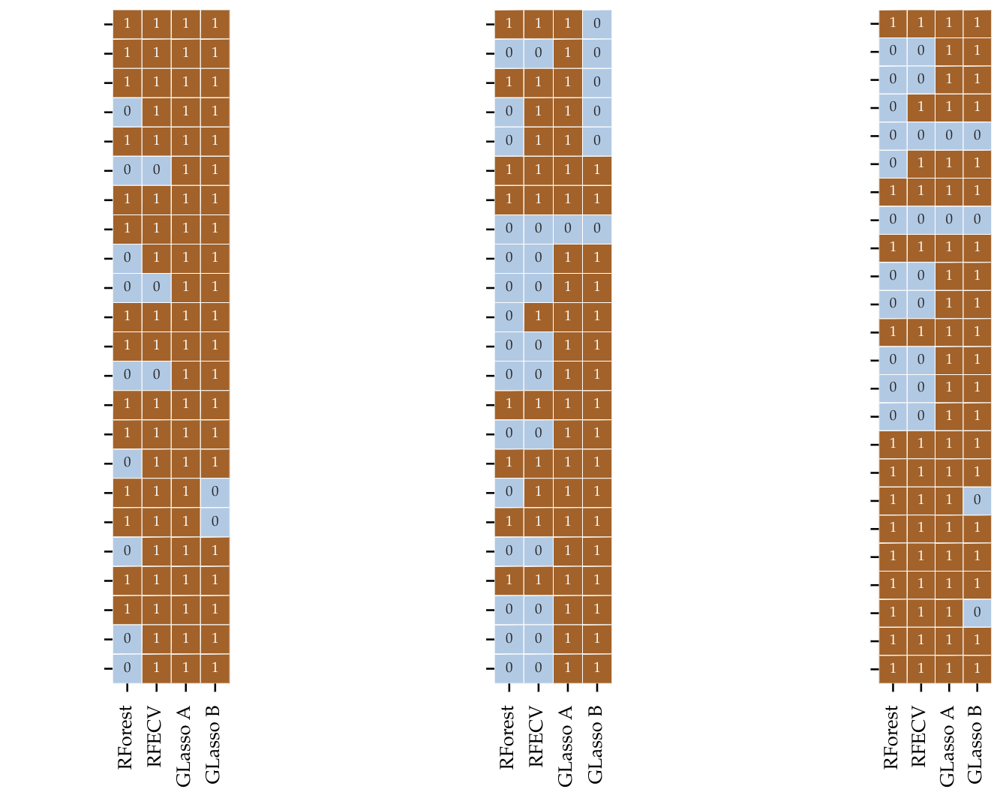
The figure above might look odd and difficult to undestand at first sight. Since I am not allowed to share the name of the features used, these were removed from the image. Each colum of the three matrices represents the selected variables for each method. A 1 means that that variable was taken into the model and 0 discarted. We can observe that since that REFCV and Model based feature selection are not aware of groups, a lot of variables are discarded. Group Lasso from the other side cannot get rid of single variable and therefore keeps those belonging to the important group. For this reason the dimensionality reduction is not as large.
Principal Component Analysis (PCA)
Instead of removing features from the feature space to reduce dimensionality on a dataset, one can search —geometrically speaking— for directions in a dataset on which the most variance lives in. By taking variables that are highly correlated with each other, linear combinations can be constructed, so that data can be represented in a lower- dimensional space. Principal Component Analysis (PCA) builds upon the fundamentals of matrix factorization, especially the Singular Value Decomposition (SVD). The SVD is a cornerstone of a lot of methods in engineering and mathematics since it provides a simple generic way of decomposing any matrix X into the matrices:
\[\begin{equation}\label{eqn:svd} X = U ~ \varSigma ~ V^{T} \end{equation}\]Both $U$ and $V^{T}$ are unitary matrices — that means, their product with the transpose results in the identity matrix $I$ — and $\varSigma$ is a diagonal non-zero matrix and full rank. The diagonal entries in $\varSigma$ are called singular values and are ranked in importance so that $\sigma_{1} > \sigma_{2} > \dots \sigma_{r}$. The SVD factorization provides a way of accurately approximating a matrix using multiple low-rank matrices. One could expand the right side of the equation \ref{eqn:svd} to see the linear combinations of rank-1 matrices:
\[\begin{equation} \tilde{X} = \sum_{k = 1}^{r} \sigma_{k}u_{k}v_{k}^{T} = \sigma_{1}u_{1}v_{1}^{T} + ... + \sigma_{r}u_{r}v_{r}^{T} \end{equation}\]Each outer product of $u_{k}v_{k}^{T}$ is scaled by the singular value $\sigma_{k}$. Since $\sigma_{k}$ is ordered in descending order the first matrix is scaled by the largest singular value. It is important to note that since the matrix $\varSigma$ has to be rectangular, but the diagonal is square, the zero entries at the bottom would result in zero matrices. To find the best low-rank approximation to the matrix $X$ there is the \textit{Eckart-Young} theorem. The method following this theorem is called truncated SVD. But how does one reduce the dimensionality of the dataset when the approximation by the SVD always outputs a matrix that is the same size but with approximated values? Here is where PCA comes into play. PCA exploits the properties of the SVD for calculating the principal components. The PCA method assumes that data is centered around the origin. To do so the mean of the matrix $X$ is subtracted, $B$ is the new centered matrix:
\[\begin{equation} B = X - \bar{X} \end{equation}\]The original PCA formulation uses a factorization method called eigenvalue decomposition to find those principal components from the covariance matrix $C$:
\[\begin{equation}\label{eqn:covariance_matrix} C = Cov(B) = \frac{1}{n-1} B^{T}B \end{equation}\]The eigenvalue decomposition factorizes a matrix in terms of its eigenvectors and eigenvalues. This factorization can only be applied to diagonalizable matrices e.g. Hermitian matrices. The covariance matrix in equation \ref{eqn:covariance_matrix} is Hermitian for which eigen-decomposition is valid. As previously stated in this chapter, one can use SVD to also compute the eigenvectors and eigenvalues of the covariance matrix by decomposing the covariance matrix $C$:
\[\begin{align} C &= X^{T}X\\ X &= U ~ \varSigma ~ V^{T}\\ X^{T}X &= (U ~ \varSigma ~ V^{T})^{T}U ~ \varSigma ~ V^{T}\\ &= V ~ \varSigma^{T} ~ U^{T} ~ U ~ \varSigma ~ V^{T}\\ X^{T}X &= V ~ \varSigma^{2} V^{T} \end{align}\]The columns of $V$ are eigenvectors of the covariance matrix $C = X^{T}X$ and $\varSigma^{2}$ is the diagonal matrix with the singular values which correspond to the square of the non-zero eigenvalues of $C$. Having found the eigenvectors and eigenvalues, then one could find the principal components by the transformation matrix $T$, taking the product of the centered data $B$ with the eigenvectors $V$ so that
\[\begin{align} B &= U ~ \varSigma ~ V^{T}\\ B~V &= U ~ \varSigma ~ V^{T} ~ V = U ~ \varSigma\\ T &= B ~ V \end{align}\]A detailed calculation of eigenvalues and eigenvectors is outside the scope of this work, more importantly is the usability these have on dimensionality reduction. The diagonal matrix $\varSigma$ of singular values (eigenvalues) $\sigma^{2}$ represents, in a statistical context, the variance. Eigenvalues and eigenvectors come in pairs and are ordered in descending order. One could see how much of the variance is explained by every eigenvector considering its eigenvalue. This is useful for dimensionality reduction, since based on the ratio of explained variance:
\[\begin{equation}\label{eqn:ratio_expl_var} \frac{\sum_{k = 1}^{r} \lambda_{k} }{\sum_{k = 1}^{n} \lambda_{k}} \end{equation}\]An arbitrary threshold of e.g. $95\%$ can be chosen, so that only those $r$-number of eigenvectors in $V$ are kept, which explains most of the variance in the dataset, in this case, 95\%. By applying the transformation $T$ with a reduced vector $V \in \mathbb{R}^{m \times r}$ to a high dimensional matrix, data is projected into the principal components, creating a lower-dimensional representation of the dataset. Figure below (left) exemplifies the concept of finding the principal components for a dataset. Here, the dataset is two-dimensional containing only two features. Using SVD, the dataset is decomposed so that one could plot the eigenvectors scaled by the eigenvalues. The scaled eigenvectors represent the principal components (PC) for that particular matrix, with PC1 explaining $56.77\%$ of the variance and PC2 explaining $43.23\%$.
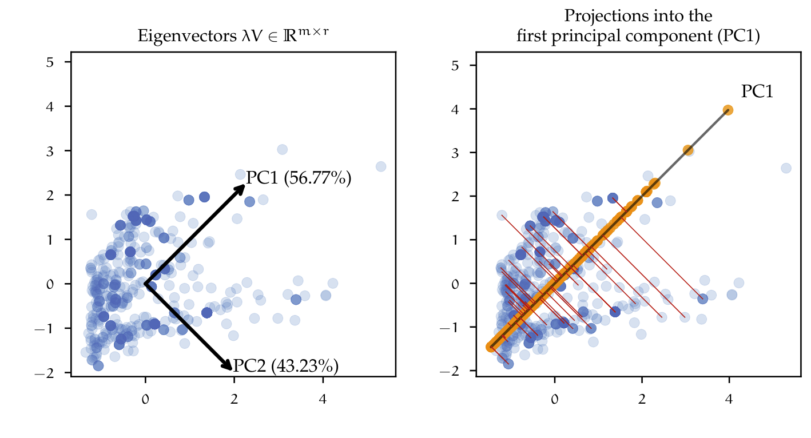
The figure above (right), shows the result of reducing the dimensionality from two to one dimension, i.e. the dataset is projected into the first principal component PC1. The red lines between the points and the principal component describe the projection of that point into the new coordinate system, defined by the principal components. This simple example can be extrapolated to the high dimensional dataset e.g. one could reduce the $70$ features down to just the first two principal components. Having a mixed dataset containing categorical and numeric variables, is also a challenge for the use of PCA, since it assumes data to be continuous. The use of PCA would be valid by just encoding the categorical variables as did before with model selection techniques like RFE or LASSO. Nevertheless, the factorization of matrices containing categorical variables can also be approached by methods other than PCA. Factor Analysis of Mixed Data (FAMD) is a dimensionality reduction method, which is specially used to analyze mixed datasets. In essence, it combines PCA for continuous variables and Multiple Correspondence Analysis (MCA) for categorical variables. MCA is an extension of Correspondence analysis (CA), which is a method of summarizing data in a two-dimensional form of a multivariate dataset, similar to PCA. CA and MCA are out of the scope of this work, therefore the concepts will not be discussed further. FAMD, MCA and CA are implemented in Python by the Prince package.
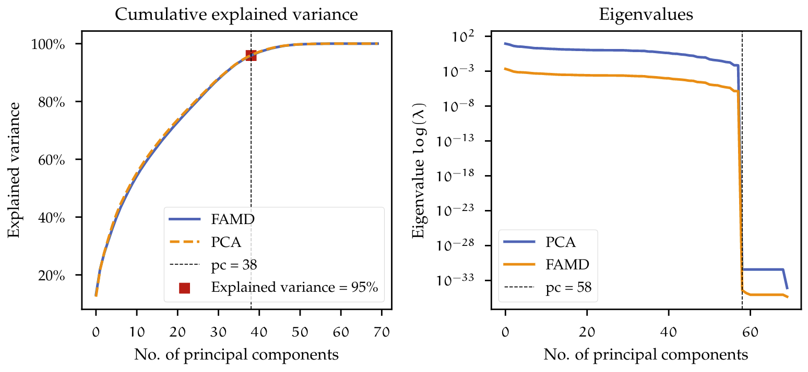
In figure BOVE both PCA and FAMD analysis were used on the dataset. On the left, the cumulative explained variance is plotted, with a threshold of $95\% $. The dimensionality of the dataset can be reduced from 70 down to 38. The explained variance described by using both models is very similar and the threshold results in the same number of components. On the right, the eigenvalues from PCA and FAMD are plotted. The visualization of the eigenvalues can help identify noisy components or dimensions which do not add any information to the dataset. Here these eigenvalues have a value equal or very close to zero. For the dataset eigenvalues above 58 dimensions are zero. The dataset could therefore just be reduced to 58 dimensions and would still preserve almost all of its variance.
Benchmarks of different feature selection and dimensionality reduction techniques
Until now, different feature selection and dimensionality reduction techniques were explored. To put the different results in a meaningful comparison, each transformed dataset — that is, the resulting dataset after applying either feature selection or dimensionality reduction — can be benchmarked using the same estimator. In table below are the results of fitting the previous Random Forest estimator using $10$-fold cross-validation.
| Method | stats | Train R2 | Test R2 | Train RMSE | Test RMSE | Hold out Test R2 | Dimensions |
|---|---|---|---|---|---|---|---|
| GLasso A | Mean | 0.967 | 0.904 | 3.389 | 5.564 | 0.877 | 67 |
| Std | 0.002 | 0.026 | 0.084 | 1.138 | |||
| GLasso B | Mean | 0.962 | 0.897 | 3.605 | 5.786 | 0.875 | 58 |
| Std | 0.002 | 0.024 | 0.071 | 1.017 | |||
| FAMD (95\%) | Mean | 0.955 | 0.834 | 3.909 | 7.254 | 0.812 | 38 |
| Std | 0.002 | 0.053 | 0.103 | 1.201 | |||
| PCA (95\%) | Mean | 0.958 | 0.841 | 3.794 | 7.180 | 0.820 | 38 |
| Std | 0.002 | 0.024 | 0.085 | 0.830 | |||
| All features | Mean | 0.966 | 0.904 | 3.405 | 5.555 | 0.878 | 70 |
| Std | 0.001 | 0.028 | 0.058 | 1.040 |
For reference purposes, the same estimator was fitted to the dataset containing all the features. From the results, it is possible to observe that the feature selection method using Group LASSO has a similar performance to the reference model. Especially the output of Group LASSO A is nearly identical with the reference model. Recall that by applying Group LASSO A to the data, practically all features were kept (see figure in chapters before), except for some misclassified features, resulting from an adverse splitting of the train and test set. On the other hand, dimensionality reduction methods like PCA and FAMD (with an explained variance threshold of 95\%) achieved a lower performance, especially on the test dataset as well as on the hold-out test set. This is an indication that the estimator used on that specific dataset may be overfitting on the train set and not be able to generalize well on the test set. To investigate further why the model may be overfitting, the bias-variance problem can be analyzed. One way to approach this is by analyzing how a model behaves by gradually increasing the number of training instances. This is called a learning curve.
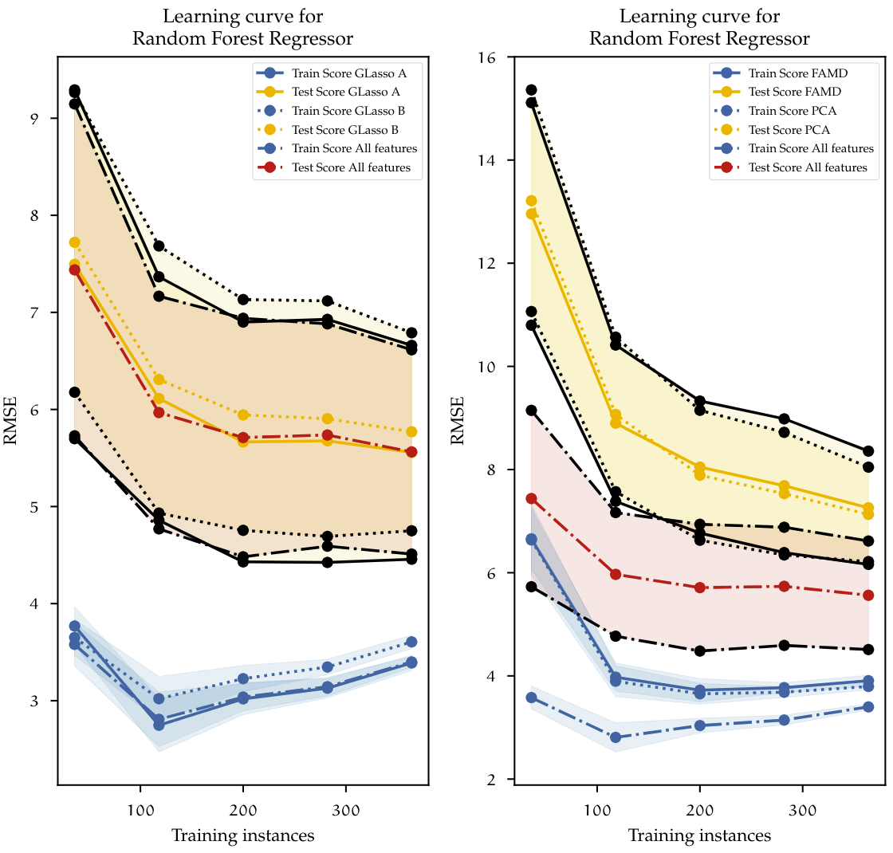
Figure above plots the learning curves for each of the datasets on benchmarks table above. Each dataset is described with a different line type. The blue lines represent the cross-validated scores of the training set; The yellow and the red lines represent the cross-validated test scores. Additionally, for each of the test scores, the confidence interval is represented by the black lines and the shaded areas accordingly. On the left, both datasets using feature selection with Group LASSO and the reference model using all the features are plotted. With the increase of training instances the overall training error increases, this is because with a low number of instances the algorithm can learn this almost perfectly, and gradually it becomes more difficult to generalize once more observations come into play. The opposite happens with the test error. With a low number of instances, the trained algorithm does not have enough information to generalize outside the train set, therefore the performance on the test set is low. Once the size of the dataset grows, ideally, both curves should converge and decrease even further. In this case, it is clear to see that the model is overfitting since, in the end, the difference between train and test scores is relatively large (approximately 2 minutes). The results of using Group LASSO resemble the base model containing all features. This behavior shows that the model is suffering from high variance. At this point, there is not much that can be done to decrease the error gap between the test and train set, other than adding more data to the model. A further increase of the dataset size could reduce the gap so that both curves eventually converge.
On the right side, the results are slightly similar. PCA and FAMD use a much lower-dimensional dataset. Here both models suffer from high bias when the number of instances is low. This can be observed by looking at the training error, which is much higher than the baseline model using all features. However, the error decreases as the number of instances increases. The gap between the test and train sets is even larger than the other two models previously investigated. From this, we can conclude that the Random Forest regressor proposed at the beginning achieves the best results when used on all the features available. Dimensionality reduction constrained to grouped features, as well as dimensionality reduction using PCA and FAMD do not increase the performance of that specific model. This statement is only valid for the used Random Forest estimator, but what if other models could also benefit from reduced datasets and as a result, achieve better results? The process of finding out the best of a large space of possible models, feature preprocessing, feature selection, and dimensionality reduction methods is a complex task. This requires not only large amounts of computational effort but also an efficient way of using optimization techniques that take into account all those parameters. A relatively new approach to this task is the use of Automated machine learning methods. This will be discussed next
AutoML
AutoML is the automation process of machine learning tasks. The main task of AutoML, is to automatically deal with the hyperparameter optimization process. As already discussed before this process can be manually approached by explicitly defining a hyperparameter space and either using brute force algorithms like Grid search or a stochastic method like Randomized search. This “manual search” is a time-consuming process, which is difficult to implement in production environments, where such research budgets and time are usually not available. AutoML should not be seen as a replacement technology for the data scientist, but rather as a supporting tool, to accelerate the preliminary discovery process and in some cases even find solutions that with some extra manual intervention, could be directly implemented. In this chapter, the basic concepts of AutoML will be explained, afterwards some AutoML libraries available in Python were used to automatically find the best possible machine learning pipeline within a predefined computational budget. In the end, the results will be compared in a Benchmark to see if AutoML approaches can be used to solve the machine learning problem from previous chapters.
The approach of AutoML can be generalized as a cash problem . Consider the feature matrix $X \in \mathbb{R}^{d}$ and a corresponding target vector $Y$ so that the resulting dataset $D$ can be divided into the disjunct sets $D_{train}$ and $D_{valid}$, corresponding to the training and the validation datasets. The AutoML approach is — in an automated manner — to select from a set of different algorithms \(\mathcal{M}_{\lambda}\). An algorithm $\mathcal{A} \in \mathcal{M}_{\lambda}$ hyper-parametrized by $\lambda \in \Lambda$, which evaluated by a loss function $\mathcal{L}$ and given a computational budget $B$ produces predictions with the lowest error. By following a cross validation setting, in which results are averaged, so that it can be formulated as an extension of the original CASH problem, as follows:
\[\begin{equation}\label{eqn:automl} \mathcal{A}_{\lambda^{*}} = \underset{\lambda \in \Lambda}{\text{armin}} \frac{1}{k} \sum_{i = 1}^{k} \mathcal{L}(\mathcal{A}_{\lambda},D_{train}^{(i)}, D_{valid}^{(i)}) ~ s.t (\sum b_{\lambda}^{i}) < B \end{equation}\]$b_{\lambda}$ represents the time it takes to compute \(\mathcal{L}(\mathcal{A}_{\lambda},D_{train}^{(i)}, D_{test}^{(i)})\). Its sum has to be lower than the global budget $B$. The process in equation \ref{eqn:automl} searches over the set of algorithms $\mathcal{M}_{\lambda}$, taking into account $B$. In practice, AutoML methods not only search for one specific algorithm, but rather optimize a machine learning pipeline. A machine learning pipeline contains a set of actions used to organize and structure the workflow in a machine learning experiment. Machine learning pipelines also contain, besides an estimator (e.g. Regression model), other processes, like a feature selection, encoding of features, data preprocessing and cross validation; ensuring that there is no data leakage in between the steps. Depending on the AutoML approach, pipelines are explored differently using different optimization methods.
Overview of different AutoML libraries}
There are to date multiple AutoML libraries available, which provide a low code interface for performing Automated machine learning. The concept has become so popular, so that big companies like Google and Microsoft have developed commercial solutions, allowing users to interactively construct and automatically optimize machine learning pipelines. All this is with the objective of democratizing machine learning.
In this work the AutoML libraries Autosklearn and TPOT were used on the datasets. Both libraries make use of the algorithms available in the machine learning package scikit-learn and have a similar framework. Additionally, for benchmarking purposes, two more AutoML libraries, MlJar and H2O were used. These will not be discussed in detail, since theirs frameworks are slightly different and would go outside the scope of this work.
Autosklearn
Autosklearn is a framework developed by the Machine Learning department at the university of Freiburg and Hannover in Germany. It is based on the previous work on the Auto-WEKA package for automated selection and hyperparameter optimization of classification algorithms. Auto-WEKA uses algorithms implemented in the WEKA data mining software and proposes the CASH problem for automated machine learning processes (c.f. \ref{eqn:automl}). Auto-WEKA approaches the simultaneous process of choosing models and tuning its hyperparameters using Bayesian optimization. For solving the CASH problem both Auto-WEKA, and therefore Autosklearn, make use of a modified version of a SMBO and the SMAC solver. Autosklearn uses the parametrized scikit-learn library and its estimators implemented in Python, which has also been used in previous chapters. In addition to Auto-WEKA, Autosklearn introduces two additional processes to the bayesian optimizer: The first is the use of metadata. Metadata — that is data that summarizes or provides information about other data — was collected from over 140 datasets from the OpenML data repository. Meta-data helps to speed up the optimization process. With such information, the system is capable of analyzing the given dataset and select initial hyperparameters that work well for a dataset in the repository with similar characteristics. This allows not only to speed up computations, but also increase the accuracy and robustness of the results.
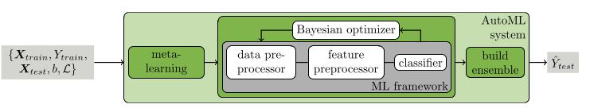
A second addition to the framework is the use of automated ensemble learning. Ensemble models are constructed from all estimators evaluated by the pipeline, in contrast to uniformly weighting each weak learner in the ensemble, e.g. like in Random Forest. The created ensemble uses a greedy approach that only keeps models that increase the accuracy of the overall ensemble. Figure above shows the Autosklearn framework. The framework takes a train dataset $X_{train}$ with a respective objective $Y_{train}$, as well as a validation set $X_{test}$. Additionally, a computational budget $b$ and a specific loss function \(\mathcal{L}\) have to be defined. First the dataset is evaluated on a meta-learning phase, using metadata from a dataset repository to speed up the optimization process via a warm start. The Bayesian optimizer evaluates not only estimators but also steps like data preprocessing and feature preprocessing.
| Computational budget | 720 min |
| Resampling strategy | $10$-fold cross validation |
| Max. number of models in disk | No limit |
| Number of jobs (parallel) | 32 |
| Memory limit | 64 Gb |
| Ensemble size | 50 models (sampled with replacement) |
| Hardware | Autosklearn version 0.11.1 |
| Software | HPC cluster with 32 CPU cores, 64 GB RAM and running Ubuntu/Linux 20.04. |
| Nr. of algorithm runs: | 342 |
| Nr. of successful algorithm runs: | 285 |
| Nr. of crashed algorithm runs: | 4 |
| Nr. of algorithms that exceeded the time limit: | 52 |
| Nr. of algorithms that exceeded the memory limit: | 1 |
| Best pipeline validation score ($R$): | 0.923 |
Evaluated models are saved to memory and then used to construct the ensemble. The generated ensemble can be used to make predictions on new data. The Autosklearn estimator was given data containing all features available, since it was shown in chapter \ref{chap:Benchmarks_data_reduction}, that the difference in performance obtained by dimensionality reduction and feature selection are marginal. For this reason, the complete dataset could be fully explored by AutoML. In addition, the optimization method used by Autosklearn includes feature preprocessing and feature selection evaluation methods inside the search space. Autosklearn handles categorical variables automatically using methods like one-hot encoding, as well as Imputing method for missing data and standardization of features.
In the next step a computational budget needed to be defined. Letting Autosklearn compute with large budgets and for longer periods of time would result in more evaluated pipelines, and therefore increase the probability of finding a better model. There is at the moment no implemented functionality to find a convergence status for the optimization process. This means that Autosklearn will continue analyzing pipelines and ensembles until it uses all the computational budget, even if a local minima was found already. The experiment was performed using the configurations in table above. The optimizer was given 24 hours computational time and was parallelized using a HPC cluster with 32 CPU cores. The number of models saved to disk was not restricted, so that the algorithm could access all models evaluated for building an ensemble. For ensemble building the default of 50 models was kept. The RAM limit budget was set to 64 GB and $10$-fold cross validation was used. After running Autosklearn, 342 algorithms were evaluated, from which 285 successfully completed the fitting process. The remaining did not complete either because of an internal crash in the pipeline or the computational budget or memory was exceeded. The best single pipeline found achieved an $R^{2}$ cross validated score of 0.923. Using this pool of generated pipelines Autosklearn created a weighted ensemble model which is depicted in figure below.
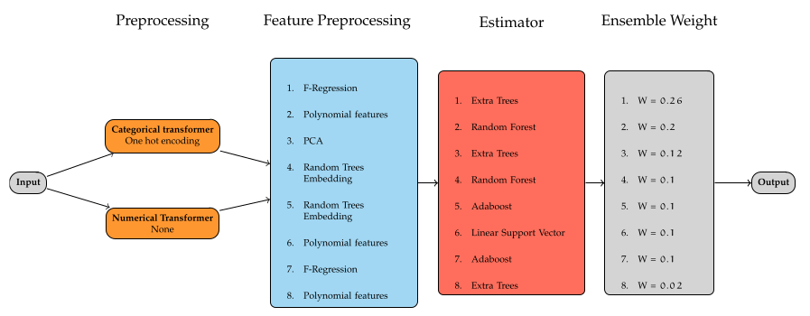
From the ensemble building procedure, not only the best performing models are chosen for the ensemble, but instead those which, when averaged, achieve the best performance. The final ensemble consists in 8 feature preprocessors and estimators, composed of tree based methods like Extra trees and Random Forests, boosting models like Adabooost, as well as linear models like the Linear support vector regressors. Taken as a reference, the best estimator found with a score of 0.923, increases the accuracy to 0.946 on the cross validated set.
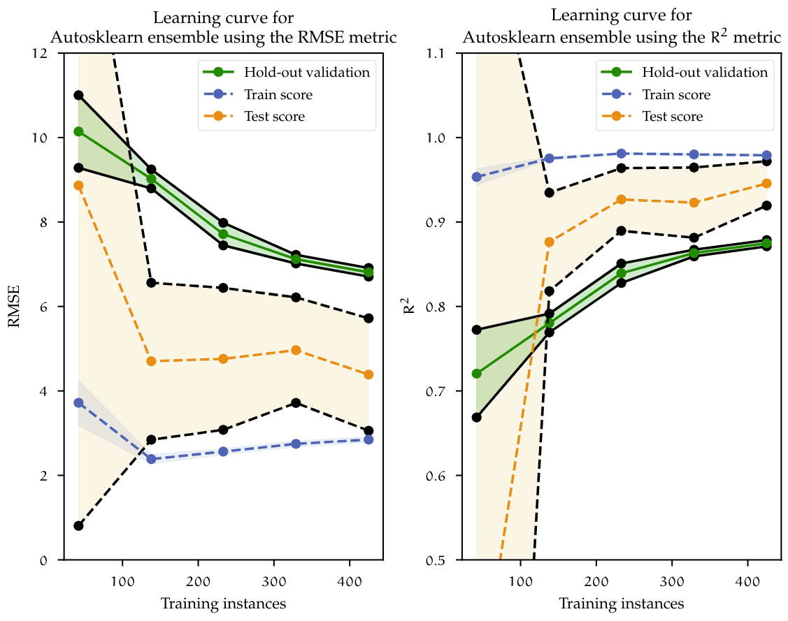
Figure above shows the learning curve for Autosklearn ensemble model. Here, similar to the learning curves previously showed, the train and test curves slowly converge to the point where more data is needed for the model to generalize even further. The cross validated RMSE is reduced from 5.564 using Random Forest and Group LASSO down to 4.387, which is over a minute reduction of the target variable. On the holdout validation set, the ensemble model also achieved a marginal lower error of 0.874 in comparison to Random Forest of 0.877. Random Forest achieved very similar performance compared to the ensemble, however further improving just a single estimator, like Random Forest, would eventually reach a limit. With an approach like AutoML, given more data and more computational budget, more pipeline combinations can be evaluated, eventually producing a much better model.
TPOT
TPOT, which stands for Tree-based Pipeline Automation Tool, is an AutoML Python library that, like Autosklearn, provides automated optimization of pipelines. In the version used for this work, TPOT primarily implements the scikit-learn library for parametrized estimators and also extends to additional libraries like XGboost and PyTorch-based neuronal networks (TPOT-NN). Models can be also trained and computed using GPU clusters, which reduces the training time significantly, especially with large datasets. TPOT uses a genetic programming approach to optimize a tree of pipelines. Pipelines are basically represented as trees of mathemarical functions. Here the nodes of the tree are operators, which can be of one of the following types: preprocessors (e.g. One Hot encoding), decomposition functions(e.g. PCA), features selectors (e.g. LASSO or RFE) and estimators (e.g. Random Forest). The process of generating predictions for a given pipeline is to follow the trees structure backwards. The tree based pipeline structure is similar to the one shown before for autosklearn. Data inputs the system at the leafs and is transformed on the nodes until reaching an estimator, which outputs results.
TPOT was initialized similarly to Autosklearn, with the same Hardware and computational budget. However, due to the differences between frameworks, different hyperparameters have to be defined and these are summarized in table below. TPOT can automatically set the memory limit needed when running the optimization process. For each generation evaluated, the population size — that is, the number of individuals to retain every generation — can be set, setting this parameter to higher values could increase the performance of the optimization process.
| Computational budget | 720 minutes |
| Resampling strategy | $10$-fold cross validation |
| Max. number of models in disk | No limit |
| Number of jobs (parallel) | 32 |
| Memory limit | Automatic |
| population size | 100 |
| Hardware: | HPC cluster with 32 CPU cores, 64 GB RAM and running Ubuntu/Linux 20.04. |
| Software: | TPOT version 0.11.7 |
| Nr. of evaluated generations: | 100 |
| Best pipeline validation score (RMSE): | 5.075 |
The generated pipeline in figure below consists in a combination of stacking estimators and feature preprocessing. Stacking is an ensemble method, in which the predictions of multiple estimators (level-0 estimators) are added together into a new dataset consisting of synthetic features. Then, a final estimator (meta-estimator) is trained on the resulting dataset. The constructed pipeline starts by fitting a Gradient Boosting Regressor and the predictions are scaled using a Robust Scaler preprocessor. This scales features using methods robust to outliers. The transformed data is passed on to a Linear Support Vector Regressor, which uses the transformed predictions from the previous estimator to fit the model. The results are then horizontally stacked as a new feature in the dataset. This process continues until the last estimator in the ensemble (Random Forest Regressor) is fitted. The resulting dataset of synthetical features is then used to fit the Meta-estimator, in this case a Random Forest Regressor.
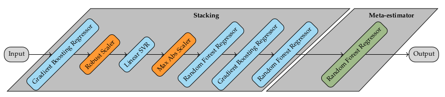
At the end of the optimization run, TPOT found the best performing pipeline achieving a RMSE of 5.075, which corresponds to a $R^{2}$ value of 0.93. Figure below shows the learning curves for the best pipeline found by TPOT. The learning curve shows that the model is overfitting, since it achieves better performance on the training set but worst on the test set. However, both curves decrease as more data is added to the model. Recalling the curves before, the same behavior can be observed. In conclusion, in order to reduce the overfitting problem; given that the convergence tendency between both train and test scores remains, more data is needed. In the next chapter, a benchmark between AutoML mehtods summarizes the findings of the model building process.
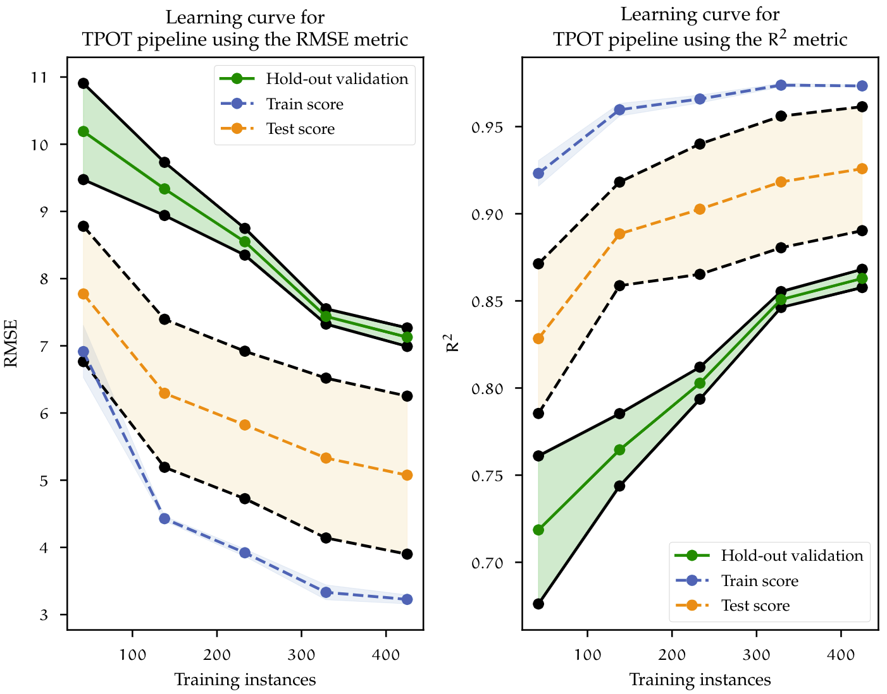
Benchmark of AutoML libraries
Before going into the benchmark results, it is important to remark, that all the AutoML methods were fitted on a similar dataset that the one used for the manual model. Particularly, two features were removed from the dataset. It would not be rasonable to remove those two variables, which happen to be highly correlated with the target. However, the reason behind this decision, has to do with the availability for collecting those variables in a preliminary stage in the forging process, which would cause data leakeage.
This data is only accurately generated after an initial production run or when a simulation model is available (which is not always the case, due to the costly procedure of designing and running FEM simulations). If a model is trained including those variables, and no data is available in a production environment, no predictions can be made.
| Criteria | Manual ML | TPOT | Autosklearn | H2O | Mljar |
|---|---|---|---|---|---|
| Train - CV RMSE | 5.564 | 4.96 | 4.388 | 5.322 | 5.435 |
| Train - CV $R^{2}$ | 0.904 | 0.93 | 0.946 | 0.93 | 0.924 |
| Hold Out test - CV RMSE | 7.455 | 7.026 | 6.809 | 6.73 | 7.044 |
| Hold Out test - CV $R^{2}$ | 0.878 | 0.867 | 0.875 | 0.877 | 0.866 |
| Validation dataset - CV RMSE | - | 9.245 | 10.901 | 12.337 | 41.96 |
| Validation dataset - CV $R^{2}$ | - | 0.82 | 0.74 | 0.667 | -2.857 |
Models were benchmarked on the following datasets: First, performance was measured on the train dataset for which cross validation was used. Second, the trained model was used to make prediction onto the Hold Out test dataset, which the algorithm haven’t seen before. Since both datasets were sampled from the initial dataset, their distributions are similar. This second benchmark gives a better idea of the generalization ability of the model. The behavior was already discussed by looking at the individual learning curves. At last, a complete new set of observations (the validation set) are introduced. This new dataset consists of customer requests, that were internally processed but did not make it into production(e.g. customer did not buy the product). Yet they carry all the required information to be predicted by the model. From table above it is possible to observe that on the Train dataset, all models performed similarly, with the RMSE score ranging between 4 and 5.5. The $R^{2}$ score remained above 0.9. On the Hold out dataset, the models start to overfit, not generalizing well on unseen data. As a result, the RMSE increases, this time ranging between 6.5 and 7.5. When exposed to the validation set, which contains outliers — since the proposals are generated based on experience and may contain new features, it is possible that they are treated as outliers —, performance decreases even further with some extreme cases like the Mljar pipeline. As mentioned at the beginning of this chapter, the Random Forest Regressor which was created manually, cannot be used to predict the validation dataset, since those variable values are not available. Finally, one is interested in a model that has the best generalization capabilities. This comparison shows that, TPOT pipelines are able to outperform the other models. For this reason, it was chosen as the best overall model in this work.
Deployment of Machine Learning models on a production environment
Machine Learning models alone, are not very useful and have to be implemented in some sort into a production environment. In order to make this technology available to everyone in the company, models had to be integrated in an intuitive and easy way for interaction. The user should be able to give the tool the necessary input information, and it should be able to parse data and automatically assign right data types. The user should not be worried about the preprocessing of the data and be able to easy access the tool regardless their own hardware. The WSK ML Sandkasten, is an application for interaction with different machine learning models. It is developed with the Streamlit Python package. This open-source library allows for the creation of Web-based applications using only Python code. Since it is Web-based, it can be used in nearly any computer, and is deployed on the companies server infrastructure. Additionally, the application allows fur multi-user login and can be password protected. To make it more intuitive to the user, it guides the user step by step asking gradually for more information.
At this point I am only allowed to show modified screenshots that do not compromise the data of the company
Figure above shows the application interface on a web browser. Additionally, to the prediction output, predictions can also be computed in batch. Here the user can provide a file (in .CSV format) which contains data for each observation, which can be formatted by a provided template. The results can be downloaded as a CSV back for further processing. Another feature which is built into the application, is a recommendation system. This feature provides the user, at the end of the prediction process, with a list, containing product’s that are similar to the one given to the system. It uses an Unsupervised Learning algorithm which clusters the data in the product’s database according to the some relevant features. Then the clustered dataset is passed to a Supervised Learning classification model, which given the user inputs for the regression model, finds the corresponding cluster in the product’s database. This feature is specially useful for the user, since it helps find similar product’s from which the manufacturing process can be adapted to. It also resembles the manual process which is used to estimate the cycle time by looking at similar product’s and giving a rough estimate based on that information and experience.